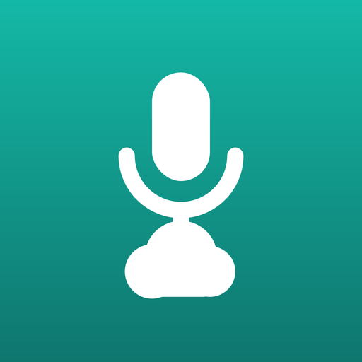

這是 Android 版的隱私權政策。iOS 版請見這裡。
感謝你使用「隨手錄」（以下稱「本 App」）。本 App 由個人開發者李碩祈（Shuo Chi Lee，以下稱「我們」）開發與發行。本文件說明本 App 如何處理你的資料。
簡短版本：我們沒有伺服器、沒有帳號系統，也沒有任何廣告、分析或追蹤。錄音預設只存在你的裝置上；只有在你主動上傳、或自行開啟「存檔後自動備份」時，錄音才會由你的裝置直接傳到你自己授權的雲端帳號，完全不經過我們。
我們沒有下列任何一項：
因此我們無法看到你的錄音、錄音名稱、你連接了哪些雲端，或你在雲端上存了什麼。
| 資料 | 存放位置 | 是否離開裝置 |
|---|---|---|
| 錄音音訊檔（.m4a） | App 私有內部儲存空間（files/Recording）與 Room 資料庫 | 否（除非你選擇上傳） |
| 錄音名稱、建立時間、長度、上傳狀態 | App 私有資料庫 | 否 |
| App 設定（自動備份、僅 Wi-Fi 上傳、是否看過導覽） | App 私有偏好設定（DataStore） | 否 |
| 雲端帳號憑證 | Synology 的密碼、Dropbox 與 OneDrive 的更新權杖，一律經 Android Keystore 以 AES-GCM 加密後才存放在 App 私有空間；Google Drive 的授權由 Google Play 服務管理，本 App 不保存其更新權杖 | 否（僅在向該雲端服務驗證身分時使用） |
錄音檔與資料庫已排除於 Android 自動備份與裝置轉移之外（系統備份有容量上限，錄音檔很容易超過）。換手機前請先將錄音上傳到你的雲端。
解除安裝本 App 時，Android 會一併刪除上述所有本機資料（含加密的雲端憑證）。
你可以選擇連接 Dropbox、Google Drive、OneDrive 與 Synology Drive。這是完全選用的功能，不連接任何雲端也能正常錄音、播放與管理檔案。
drive.file），OneDrive 僅能存取本 App 的專屬資料夾（Files.ReadWrite.AppFolder），本 App 不會讀取你雲端上的其他檔案。錄音上傳後即由各雲端服務依其隱私權政策處理：Dropbox、Google、Microsoft、Synology。
本 App 對從 Google API 取得之資訊的使用與傳輸，遵守 Google API Services User Data Policy，包括其中的「有限使用（Limited Use）」規定：Google Drive 的存取權僅用於替你上傳、列出與刪除本 App 建立的錄音檔，不用於其他任何目的，不會轉移給任何人，也不會被我們或任何第三方讀取。
RECORD_AUDIO）：僅在你按下錄音鍵後啟用，用於錄製你要求的聲音。FOREGROUND_SERVICE、FOREGROUND_SERVICE_MICROPHONE）：讓錄音在你切到其他 App 或關閉螢幕後持續進行。錄音期間通知列會顯示「錄音中」常駐通知，你隨時看得到錄音正在進行。POST_NOTIFICATIONS，Android 13 以上）：顯示上述錄音中通知。拒絕不影響錄音功能。INTERNET、ACCESS_NETWORK_STATE）：僅用於上傳到你授權的雲端帳號，並判斷目前是否為 Wi-Fi（「僅在 Wi-Fi 上傳」）。RECEIVE_BOOT_COMPLETED、WAKE_LOCK）：由系統元件 WorkManager 使用，讓未完成的上傳在重新開機後繼續、上傳期間不被休眠中斷。本 App 不使用廣告 ID（已於 manifest 移除 AD_ID 權限），也不使用位置、相機、聯絡人或相片。
本 App 使用 Google Play 服務的授權元件取得 Google Drive 的存取權；Dropbox、OneDrive 與 Synology 皆直接以 HTTPS 呼叫官方 API，未使用其他第三方 SDK。本 App 未內建任何廣告、分析或當機回報 SDK。
本 App 為一般用途的錄音工具，並非以兒童為對象。我們不向任何人蒐集個人資料，包含兒童。
由於我們不持有你的任何資料，你的資料完全由你掌控：可隨時在 App 內刪除錄音、取消雲端連接，或刪除 App 清除所有本機資料；雲端上的檔案請於各雲端服務中管理。
若本 App 新增任何涉及資料處理的功能，我們會更新本頁並修改上方的「最後更新」日期，重大變更會在 Google Play 的版本說明中一併告知。
對本隱私權政策有任何疑問，歡迎來信：socky.lee@gmail.com